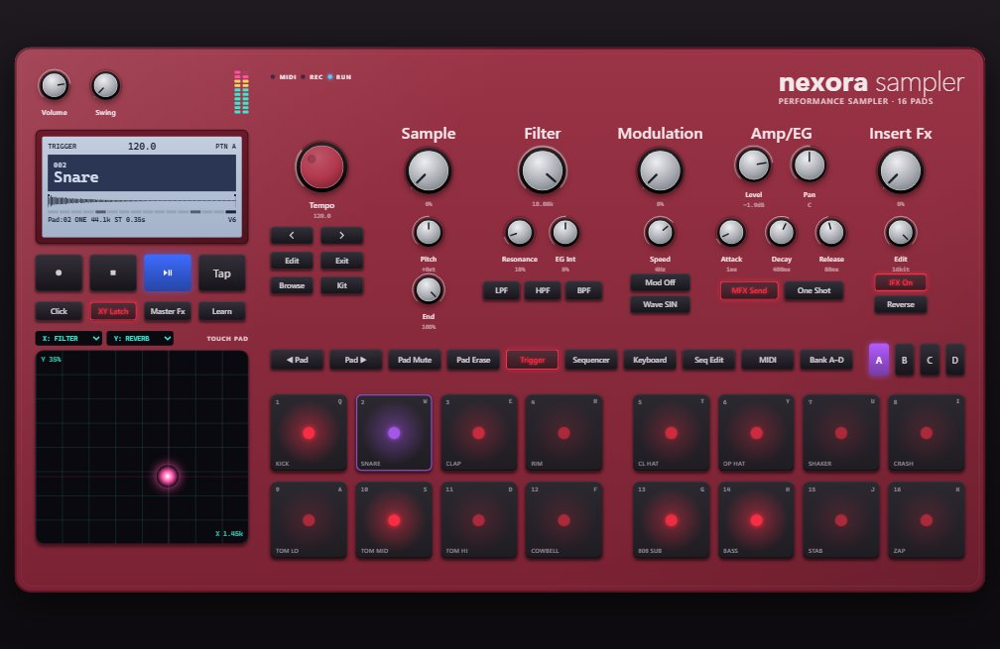
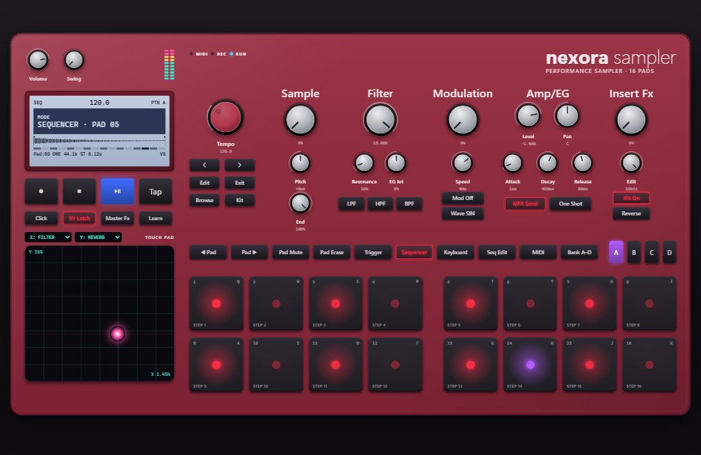
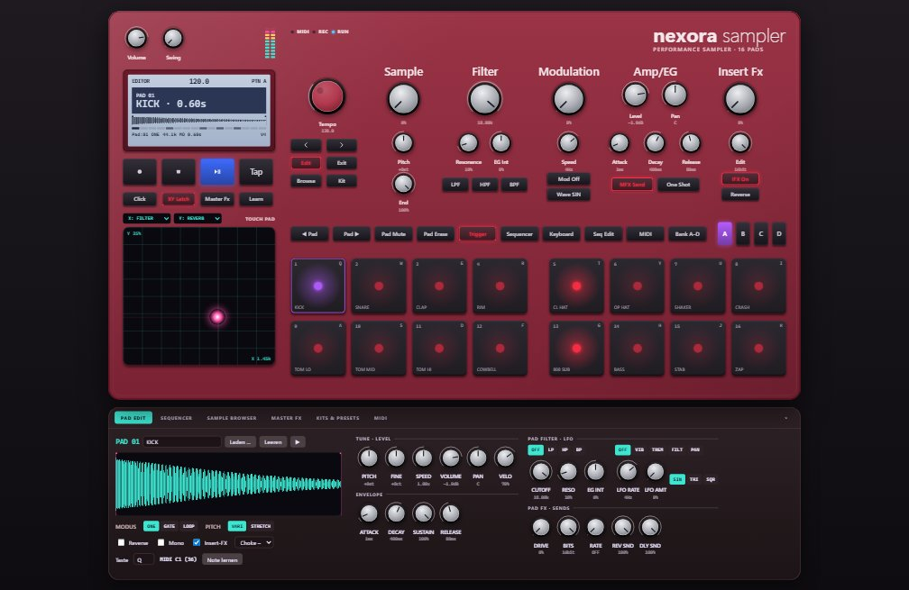
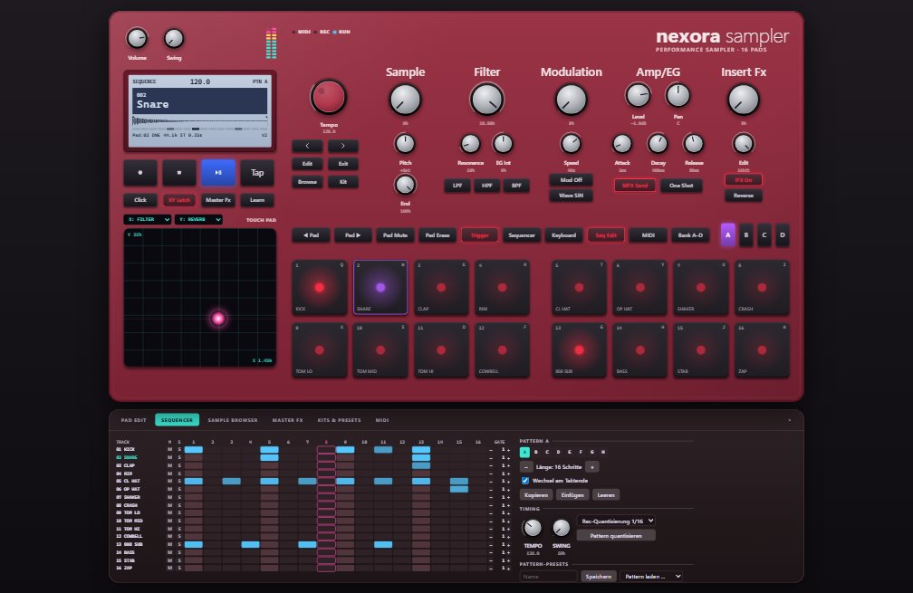
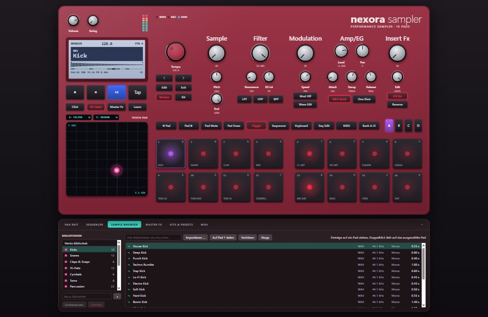
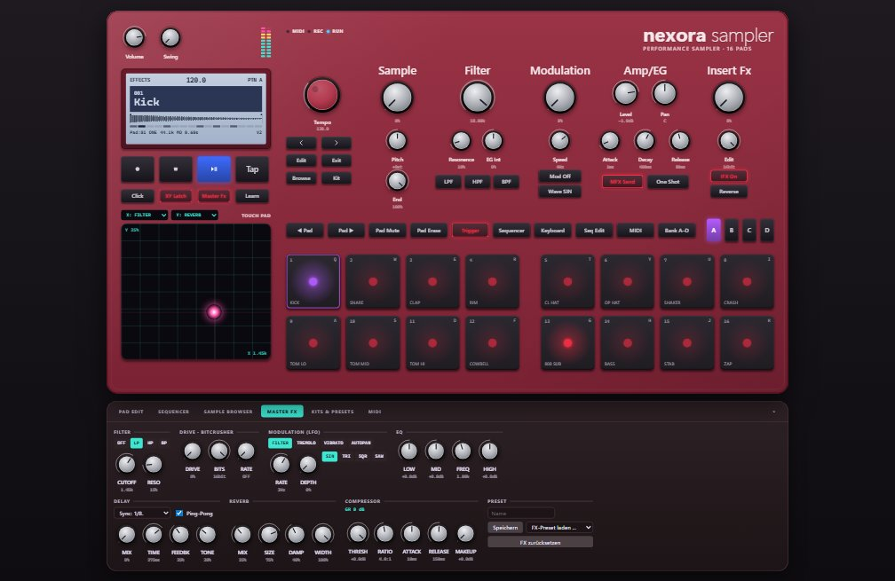
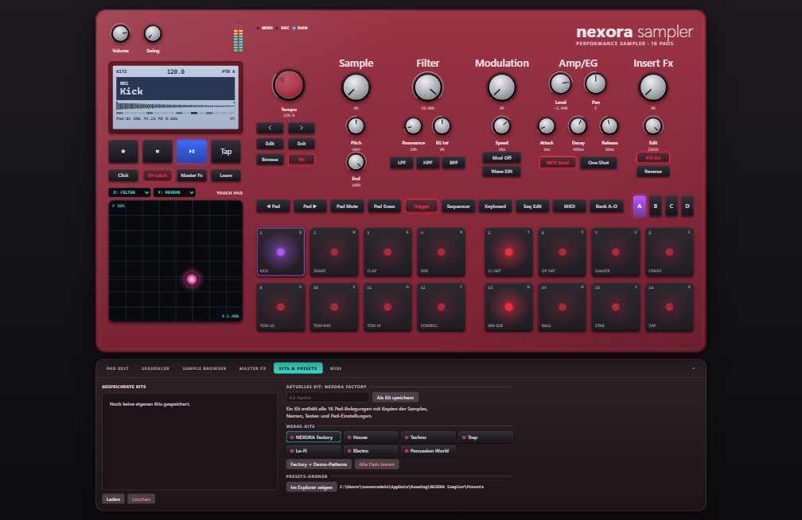
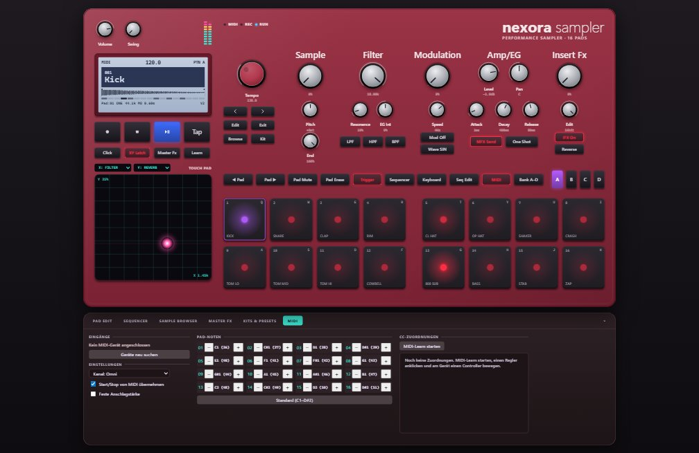

nexora sampler
Bedienungsanleitung · Version 1.0 · Windows und macOS
NEXORA Sampler ist ein Sampler mit 16 Pads, Step-Sequencer und Effekten, aufgebaut wie ein Hardware-Groovebox-Gerät. Du spielst Klänge auf Pads, baust daraus Beats, lädst eigene Lieder und Samples, formst den Sound mit Reglern und exportierst das Ergebnis als WAV- oder AIFF-Datei.
1Das Gerät im Überblick

| Bereich | Was er macht |
|---|---|
| Volume / Swing (oben links) | Gesamtlautstärke und Swing (der „Groove“ des Beats). Daneben die Pegelanzeige. |
| Display | Zeigt Tempo, aktuelles Pattern, das ausgewählte Pad mit Wellenform und jede Änderung, die du gerade machst. |
| Transport | ● Aufnahme, ■ Stopp, ▶‖ Play/Pause, Tap Tempo antippen. |
| Click · XY Latch · Master Fx · Learn | Metronom, Touchpad-Werte halten, Master-Effekte öffnen, MIDI-Learn. |
| Touchpad | Zwei Effekte gleichzeitig mit der Maus steuern (Kapitel 11). |
| Tempo-Rad und Navigation | Tempo (BPM), ‹ › vorheriges/nächstes Pattern, Edit Pad-Editor, Exit Bereich schließen, Browse Sample-Browser, Kit Kits & Presets. |
| Sample · Filter · Modulation · Amp/EG · Insert Fx | Die Klangregler. Sie wirken immer auf das ausgewählte Pad (lila umrandet). |
| Tastenreihe | Pad wechseln, Spur stummschalten/löschen, Pad-Modus wählen, Sequencer und MIDI öffnen, Pattern-Bank und Patterns A–H. |
| 16 Pads | Zum Spielen, zum Programmieren von Schritten oder als Klaviatur, je nach Modus. |
| Untere Bereiche | Klappen mit PAD EDIT, SEQUENCER, SAMPLE BROWSER, MASTER FX, KITS & PRESETS und MIDI auf. Ein Klick auf denselben Reiter oder Exit schließt sie wieder. |
2In 2 Minuten zum ersten Beat
- Starte NEXORA. Ein Kit mit 16 Klängen ist schon geladen (Kick, Snare, Hi-Hats, Bass …).
- Drücke ein paar Tasten: Q ist die Kick, W die Snare, T die Hi-Hat.
- Drücke die Leertaste. Ein Demo-Beat läuft. Noch einmal Leertaste stoppt ihn.
- Klicke auf Seq Edit. Unten öffnet sich das Sequencer-Raster. Jedes Kästchen, das du anklickst, ist ein Schlag.
- Drehe während der Beat läuft am großen Filter-Regler oder fahre mit der Maus über das Touchpad, und hör, wie sich der Sound verändert.
3Neues Projekt: leer oder mit Kit
Mit Strg+N (Menü Datei → Neues Projekt …) fragt NEXORA, wie das Projekt beginnen soll:
- Leeres Projekt: 16 leere Pads und leere Patterns. Ideal, um alles mit eigenen Klängen und Liedern zu befüllen.
- Mit Werks-Kit: das Standard-Kit mit zwei Demo-Beats zum Ausprobieren.
Direkt ein leeres Projekt ohne Nachfrage: Strg+Umschalt+N oder der Knopf Neues leeres Projekt im Bereich KITS & PRESETS. Hast du ungespeicherte Änderungen, fragt NEXORA vorher, ob sie gesichert werden sollen.
4Pads spielen
Mit Maus und Tastatur
- Maus: Pad anklicken. Weiter oben auf dem Pad klingt es lauter, weiter unten leiser (abschaltbar in den Einstellungen).
- Tastatur: obere Reihe Q W E R T Y U I = Pads 1–8, untere Reihe A S D F G H J K = Pads 9–16.
- Pad auswählen (für Regler und Editor): Pad anklicken oder ◀ Pad / Pad ▶. Das ausgewählte Pad ist lila umrandet.
- Rechtsklick auf ein Pad: Sample laden, bearbeiten, MIDI-Note lernen, Spur löschen, Pad leeren.
Die drei Pad-Modi
| Knopf | Was die Pads dann tun |
|---|---|
| Trigger | Normaler Modus: Jedes Pad spielt seinen Klang. |
| Sequencer | Die 16 Pads sind die 16 Schritte der Spur des ausgewählten Pads. Ein Druck auf ein Pad setzt oder löscht den Schlag an dieser Stelle. Leuchtende Pads = gesetzte Schläge. |
| Keyboard | Die Pads werden zur Klaviatur und spielen den Klang des ausgewählten Pads in verschiedenen Tonhöhen. Untere Reihe = weiße Tasten (C bis C), obere Reihe = schwarze Tasten. Oktave wechseln: Strg+Alt+↑/↓. |

5Regler bedienen
- Ziehen nach oben/rechts erhöht den Wert, nach unten/links verringert ihn. Die Änderung ist sofort hörbar, das Display zeigt den genauen Wert.
- Fein einstellen: beim Ziehen Umschalt oder Alt halten.
- Mausrad über dem Regler: in kleinen Schritten drehen (mit Umschalt noch feiner).
- Doppelklick: zurück auf den Standardwert.
- Rechtsklick: Regler auf eine Touchpad-Achse legen, MIDI-Learn, MIDI-Zuordnung entfernen, zurücksetzen.
6Den Klang eines Pads formen
Alle Regler auf dem Gerät wirken auf das ausgewählte Pad. Jedes Pad hat seine eigenen Einstellungen.
| Sektion | Regler und Knöpfe |
|---|---|
| Sample | Großer Regler = Startpunkt im Sample, Pitch = Tonhöhe in Halbtönen, End = Endpunkt. |
| Filter | Großer Regler = Cutoff (Grenzfrequenz), Resonance = Betonung der Grenzfrequenz, EG Int = wie stark die Hüllkurve den Filter bewegt. LPF lässt Bässe durch (dumpfer), HPF lässt Höhen durch (dünner), BPF lässt nur die Mitten durch. |
| Modulation | Großer Regler = Tiefe, Speed = Tempo der Modulation. Mod Off wählt das Ziel (Tonhöhe, Lautstärke, Filter, Panorama), Wave die Wellenform (Sinus, Dreieck, Rechteck, Sägezahn, Zufall). |
| Amp/EG | Level = Lautstärke, Pan = links/rechts, Attack = Einschwingen, Decay = Abklingen, Release = Ausklingen nach dem Loslassen. MFX Send schickt das Pad in Hall und Delay. Der Knopf daneben schaltet die Wiedergabeart um: One Shot (spielt ganz ab), Amp EG (spielt, solange gedrückt) und Loop (wiederholt). |
| Insert Fx | Großer Regler = Drive (Verzerrung), Edit = Bitcrusher (Lo-Fi-Effekt). IFX On schaltet beides ein/aus, Reverse spielt rückwärts. |
Der Pad-Editor (Bereich PAD EDIT)

- Name des Pads ändern, Laden … (anderes Sample), Leeren, ▶ anspielen.
- Wellenform: Start- und Endmarker mit der Maus ziehen, um einen Ausschnitt zu wählen. Audiodateien kann man direkt auf die Wellenform ziehen.
- MODUS: ONE / GATE / LOOP, wie beim Knopf auf dem Gerät.
- PITCH: VARI ändert Tonhöhe und Tempo zusammen (wie eine Schallplatte). STRETCH ändert nur die Tonhöhe, das Tempo bleibt.
- Reverse, Mono (ein neuer Schlag beendet den vorigen), Insert-FX.
- Choke-Gruppe: Pads derselben Gruppe schneiden sich gegenseitig ab, z. B. offene und geschlossene Hi-Hat.
- Taste: welche Computertaste das Pad spielt. Note lernen: MIDI-Note zuweisen.
- Weitere Regler: Feinstimmung, Geschwindigkeit, Anschlagsempfindlichkeit, Hüllkurve, Filter, LFO, Drive, Bitcrusher und die Sends zu Hall und Delay.
7Beats bauen mit dem Sequencer

Das Raster
Öffne Seq Edit oder den Reiter SEQUENCER. Jede Zeile ist ein Pad, jede Spalte einer von 16 Schritten (ein Takt in Sechzehnteln). Die markierte Spalte zeigt, wo die Wiedergabe gerade steht.
- Klick auf ein Kästchen: Schlag an/aus.
- Umschalt+Klick: Anschlagstärke ändern (leiser/lauter).
- M = Spur stumm, S = Spur solo.
- GATE (rechts in jeder Zeile, –/+): Notenlänge in Schritten, wirkt bei Pads im Modus Gate oder Loop.
Beispiel: ein einfacher House-Beat
01 KICK: Schritte 1, 5, 9, 13
02 SNARE oder 03 CLAP: Schritte 5, 13
05 CL HAT: Schritte 3, 7, 11, 15
Dann Leertaste. Ohne Maus geht es auch: Pad auswählen, Sequencer-Modus einschalten und die Schritte direkt auf den Pads antippen.
Patterns
- Es gibt 8 Patterns, A bis H. Mit den Knöpfen rechts neben den Pads wählst du A–D. Bank A–D schaltet auf E–H um. Tastatur: Strg+1 … Strg+8.
- Wechsel am Taktende: Beim Umschalten während der Wiedergabe springt NEXORA erst am Ende des Takts ins neue Pattern. So bleibt alles im Takt.
- Kopieren / Einfügen: ein Pattern auf ein anderes übertragen, z. B. um eine Variation zu bauen. Leeren löscht das aktuelle Pattern.
- Länge: mit –/+ 1 bis 16 Schritte.
- Pad Mute schaltet die Spur des ausgewählten Pads stumm, Pad Erase löscht sie im aktuellen Pattern.
- Pattern-Presets: einen Rhythmus unter einem Namen speichern und in anderen Projekten wieder laden.
Tempo und Groove
- Tempo: am Tempo-Rad drehen oder mit Tap (Strg+T) im Takt antippen.
- Swing: verschiebt jeden zweiten Sechzehntel nach hinten. 50 % = gerade, höher = mehr Groove.
8Live einspielen
- Optional Click einschalten (Strg+K), dann hörst du ein Metronom.
- ● drücken (Strg+R), dann ▶ bzw. Leertaste.
- Auf den Pads oder der Tastatur spielen. Jeder Schlag wird ins laufende Pattern geschrieben, das immer wieder von vorne läuft. So kannst du Schicht für Schicht aufbauen.
- ● erneut drücken beendet die Aufnahme.
Rec-Quantisierung (im Sequencer unter Timing): Die Schläge werden auf 1/16, 1/8 oder 1/4 gerückt. Auf OFF bleibt dein genaues Timing erhalten. Pattern quantisieren rückt nachträglich alle Schläge aufs Raster.
9Eigene Lieder und Samples laden
Unterstützt werden MP3, WAV, AIFF, FLAC, M4A und OGG, bis 10 Minuten pro Datei.
Direkt auf ein Pad
- Datei aus dem Explorer (Mac: Finder) auf ein Pad ziehen, fertig.
- Oder Pad auswählen und Strg+L bzw. im Pad-Editor Laden ….
Einen Ausschnitt verwenden
- Pad auswählen und den Bereich PAD EDIT öffnen.
- In der Wellenform Start- und Endmarker an die gewünschte Stelle ziehen, z. B. auf den Refrain oder eine Gesangszeile.
- Modus wählen: ONE spielt den Ausschnitt einmal, GATE nur solange gedrückt, LOOP wiederholt ihn.
- Passt das Tempo nicht zum Beat? Mit STRETCH und dem Regler Speed das Tempo ändern, ohne dass die Stimme höher klingt.
Beim Speichern werden alle verwendeten Dateien mit ins Projekt kopiert. Deine Originaldateien bleiben unverändert.
10Sample-Browser und Bibliothek

- Die Werks-Bibliothek enthält 151 Klänge in 13 Kategorien: Kicks, Snares, Claps, Hi-Hats, Becken, Toms, Percussion, 808/Bass, Synth/Keys, Akkorde, Pads, Vocal-Chops und FX.
- Eigene Bibliotheken: mit + anlegen, Umbenennen, Löschen. Mit Importieren … (Strg+I) oder per Ziehen in die Liste fügst du Dateien hinzu.
- Suche durchsucht alle Bibliotheken.
- Ein Klick auf einen Eintrag spielt ihn vor (abschaltbar). Vorhören / Stopp gibt es auch als Knopf.
- Auf ein Pad bringen: Eintrag auf ein Pad ziehen, Doppelklick (lädt aufs ausgewählte Pad) oder Auf ausgewähltes Pad laden.
11Das Touchpad
Das Touchpad links steuert zwei Regler gleichzeitig: einen mit der Waagerechten (X), einen mit der Senkrechten (Y). Standard: X = Master-Filter, Y = Hall.
- Mit gedrückter Maustaste über das Feld fahren, am besten während der Beat läuft.
- Die Achsen wählst du in den beiden Auswahlfeldern über dem Pad, oder per Rechtsklick auf einen beliebigen Regler → Auf Touchpad X-Achse / Y-Achse legen.
- XY Latch aus: Beim Loslassen springen die Werte zurück. XY Latch an: Die Werte bleiben stehen.
12Master-Effekte

Öffnen mit Master Fx oder dem Reiter MASTER FX. Alle Effekte wirken auf den Gesamtklang:
- Filter: Master-Filter für Ein- und Ausblenden des Klangs („Filter-Sweep“).
- Modulation (LFO): Tremolo, Vibrato, Filter- oder Auto-Pan-Bewegung.
- Drive · Bitcrusher: Verzerrung und Lo-Fi.
- Delay: Echo im Takt, wahlweise Ping-Pong (links/rechts im Wechsel).
- Reverb: Hall. Welche Pads ihn bekommen, steuern die Sends der Pads (MFX Send).
- EQ: Bässe, Mitten und Höhen.
- Compressor: macht den Mix dichter und lauter.
FX zurücksetzen stellt alles auf Standard. Einstellungen lassen sich als FX-Preset speichern und laden.
13Kits und Presets

- Ein Kit ist die Belegung aller 16 Pads mit Klängen, Namen, Tasten und Pad-Einstellungen.
- Werks-Kits: NEXORA Factory, House, Techno, Trap, Lo-Fi, Electro, Percussion World. Ein Klick lädt das Kit, deine Patterns bleiben erhalten.
- Factory + Demo-Patterns lädt das Standard-Kit samt Demo-Beats.
- Alle Pads leeren leert alle Pads, die Patterns bleiben.
- Als Kit speichern: aktuelle Pad-Belegung unter einem Namen sichern. Unter Gespeicherte Kits kannst du sie Laden oder Löschen.
- Im Explorer zeigen öffnet den Ordner mit allen Presets.
14MIDI-Controller

Schließe ein MIDI-Keyboard oder einen Pad-Controller per USB an und öffne MIDI.
- Eingänge: Gerät auswählen. Geräte neu suchen, falls es nicht erscheint. Kanal: alle oder ein bestimmter.
- Pad-Noten: Standard ist C1–D#2 (die üblichen Drum-Pad-Noten). Doppelklick auf ein Pad-Feld und eine Taste am Gerät drücken, dann ist die Note neu zugewiesen.
- MIDI-Learn für Regler: Learn drücken, einen Regler anklicken, am Gerät einen Drehregler bewegen, fertig. Die Zuordnungen stehen unter CC-Zuordnungen.
- Feste Anschlagstärke: jeder Schlag gleich laut. Start/Stop von MIDI übernehmen: Play/Stop folgt einem externen Gerät.
15Speichern und Öffnen
- Strg+S Sichern, Strg+Umschalt+S Sichern unter …. Ein Projekt ist ein Ordner
Name.nexoramit allen verwendeten Samples. Du kannst ihn also als Ganzes weitergeben oder sichern. - Strg+O Projekt öffnen: den Ordner
.nexoraoder die Dateiproject.jsondarin wählen. - Projekte sind zwischen Windows und Mac austauschbar.
- Fehlt beim Öffnen ein Sample, meldet NEXORA welches. Du kannst es über den Sample-Browser neu zuweisen.
16Als Audiodatei exportieren
Strg+E (Menü Datei → Audio exportieren …) speichert deinen Beat als Datei, z. B. zum Anhören am Handy oder zum Weiterbearbeiten in einem anderen Programm.
| Option | Bedeutung |
|---|---|
| Format | WAV oder AIFF |
| Abtastrate | 44,1 kHz (CD) oder 48 kHz (Video) |
| Bittiefe | 16 Bit, 24 Bit oder 32 Bit Float (nur WAV) |
| Wiederholungen | Wie oft das Pattern hintereinander gespielt wird (1–64) |
| Ausklingzeit | Wie lange Hall und Echo am Ende ausklingen dürfen (bis 30 s) |
| Pattern-Kette exportieren | Mehrere Patterns hintereinander, z. B. A A B A. So wird aus einzelnen Patterns ein ganzer Song. |
| Normalisieren | Bringt die Datei auf maximale Lautstärke ohne Übersteuern (−0,3 dBFS) |
Der Export klingt genau wie die Wiedergabe, inklusive aller Effekte.
17Einstellungen
Strg+, oder Datei → Einstellungen …
- Audio: Ausgabegerät (Lautsprecher, Kopfhörer, Audio-Interface) und Latenz. Niedrige Latenz = direkteres Spielgefühl, bei Knacksern höher stellen.
- Projekt: Projektname, Polyphonie (wie viele Klänge gleichzeitig) und Voice-Stealing.
- Bedienung: Gehäusefarbe (Crimson oder Lilac), Anschlagstärke über die Klickposition, Anschlagstärke der Tastatur, angeschlagenes Pad automatisch auswählen, MIDI-Eingang an/aus.
- Bibliothek: Importe in die Bibliothek kopieren, beim Auswählen vorhören, Lautstärke beim Vorhören.
18Alle Tastenkürzel
| Taste | Funktion |
|---|---|
| Q–I, A–K | Pads 1–8 und 9–16 |
| Leertaste | Play / Stop |
| Strg+. | Pause |
| Strg+R / K / T | Aufnahme / Metronom / Tap-Tempo |
| Strg+1 … 8 | Pattern A … H |
| Strg+N | Neues Projekt (leer oder mit Werks-Kit) |
| Strg+Umschalt+N | Neues leeres Projekt |
| Strg+O / S / Umschalt+S | Öffnen / Sichern / Sichern unter |
| Strg+I / L | Samples importieren / Sample aufs ausgewählte Pad laden |
| Strg+E | Audio exportieren |
| Strg+, | Einstellungen |
| Strg+Alt+P / T / K | Pad-Modus Trigger / Sequencer / Keyboard |
| Strg+Alt+↑ / ↓ | Keyboard-Modus: Oktave höher / tiefer |
| Strg+Alt+1 … 6 | Pad-Editor, Sequencer, Sample-Browser, Master-Effekte, Kits & Presets, MIDI |
| Strg+Alt+0 | Unteren Bereich schließen |
| Strg+Umschalt+M | MIDI-Learn |
| Umschalt+Esc | Alle Noten aus (Notbremse, wenn etwas hängt) |
| F1 | Diese Anleitung |
19Probleme und Lösungen
| Problem | Lösung |
|---|---|
| Kein Ton | Einmal ins Fenster klicken oder eine Taste drücken. In den Einstellungen das richtige Ausgabegerät wählen. Im Windows-Lautstärkemixer prüfen, ob NEXORA stumm ist. Volume oben links aufdrehen, Pad Mute und M/S im Sequencer prüfen. Ist das Pad leer („EMPTY“)? |
| Knackser oder Aussetzer | In den Einstellungen eine höhere Latenz wählen. Andere Programme schließen. |
| Ein Ton hängt / hört nicht auf | Umschalt+Esc (alle Noten aus). Bei Loop-Pads ist das Dauerspielen gewollt: Modus auf ONE stellen. |
| Windows warnt beim Start („Der Computer wurde durch Windows geschützt“) | Die App ist nicht mit einem gekauften Zertifikat signiert. Auf Weitere Informationen → Trotzdem ausführen klicken. |
| Mac: „kann nicht geöffnet werden“ | Rechtsklick auf die App → Öffnen → Öffnen bestätigen. |
| Sample fehlt beim Öffnen eines Projekts | NEXORA nennt die fehlenden Dateien. Über den Sample-Browser neu zuweisen und das Projekt erneut sichern. |
| Datei lässt sich nicht laden | Unterstützt: MP3, WAV, AIFF, FLAC, M4A, OGG, bis 10 Minuten. Längere Lieder vorher kürzen. |
| MIDI-Gerät wird nicht erkannt | Gerät vor dem Start einstecken oder Geräte neu suchen. In den Einstellungen prüfen, ob „MIDI-Eingang aktiv“ eingeschaltet ist. |
NEXORA Sampler 1.0 · Diese Anleitung ist auch in der App unter Hilfe → Anleitung (F1) verfügbar.